Пресс-центр Механита
Практика металлообработки, реальные внедрения, инженерные разборы оборудования и технологии производства.
Как выбрать станок
Практические критерии выбора металлообрабатывающего оборудования всех типов — токарного, фрезерного, шлифовального, расточного, электроэрозионного и листообрабатывающего.

Как выбрать вертикальный обрабатывающий центр
10 параметров, которые определяют возможности станка: от рабочей зоны до автоматизации.
Читать →
BT40 или BT50: какой конус шпинделя выбрать
Сравнение жёсткости, инструмента, оборотов и типовых задач без упрощения «один лучше другого».
Читать →
8 000, 12 000 или 15 000 об/мин: какие обороты нужны
Как связать максимальные обороты с диаметром инструмента, материалом и режимами резания.
Читать →
Вертикальный или горизонтальный обрабатывающий центр
Сравнение по числу сторон детали, стружкоудалению, паллетизации и стоимости проекта.
Читать →
Когда действительно нужен пятиосевой центр
Критерии, при которых 5 осей сокращают установки и дают измеримый эффект.
Читать →
3+2 или одновременная 5-осевая обработка
Разница кинематики и применения: позиционная обработка против simultaneous 5-axis.
Читать →
Как выбрать токарный станок по детали
Диаметр, длина, проход шпинделя, патрон, револьвер, задняя бабка и программа выпуска.
Читать →
Ось Y в токарном центре
Какие операции она позволяет убрать: практика фрезерования и сверления вне оси.
Читать →
Противошпиндель: когда он нужен
Когда передача детали на второй шпиндель убирает вторую операцию и переустановку.
Читать →
Приводной инструмент в токарном центре
Какие сверлильные и фрезерные операции можно интегрировать в токарный цикл.
Читать →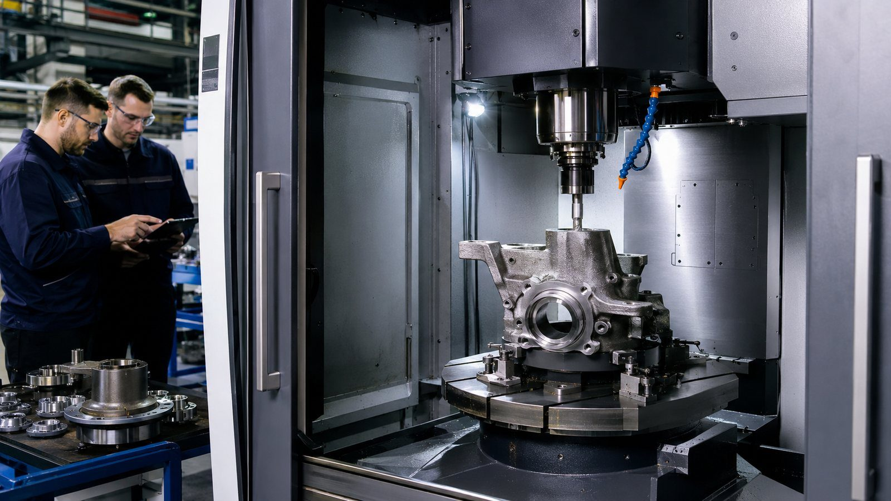
Линейные или роликовые направляющие
Сравнение динамики, жёсткости и задач тяжёлой или высокоскоростной обработки.
Читать →
Как выбрать портальный обрабатывающий центр
Межколонное расстояние, стол, ходы, масса детали, ползун и шпиндельные головки.
Читать →
Горизонтально-расточный станок: ЧПУ или УЦИ
Как выбор управления связан с серийностью, траекторией и типом крупной детали.
Читать →
Какой шлифовальный станок выбрать
Круглошлифовальный, плоскошлифовальный или бесцентровый — выбор по геометрии и партии.
Читать →Технологические маршруты по деталям
Разбор конкретных деталей и узлов: базирование, установы, контроль — от чертежа до готовой детали.
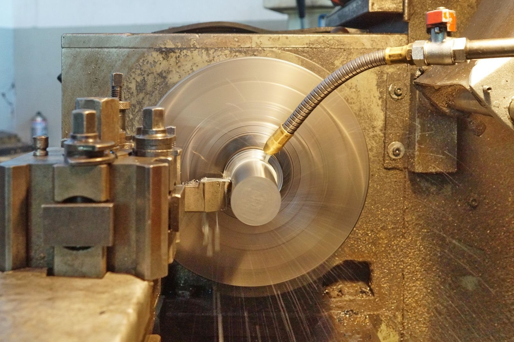
Как обработать ступицу колеса
Технологический маршрут от заготовки до контроля: точение, сверление, базирование.
Читать →
Обработка поворотного кулака
Операции, оборудование и контроль safety-critical детали.
Читать →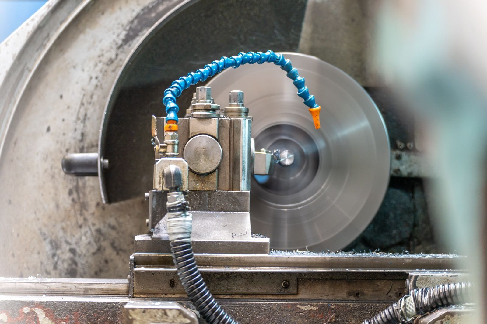
Как изготовить тормозной диск
Точение, сверление и контроль торцевого биения фрикционных поверхностей.
Читать →Обработка корпуса подшипникового узла
Как обеспечить соосность отверстий: базы, растачивание, контроль.
Читать →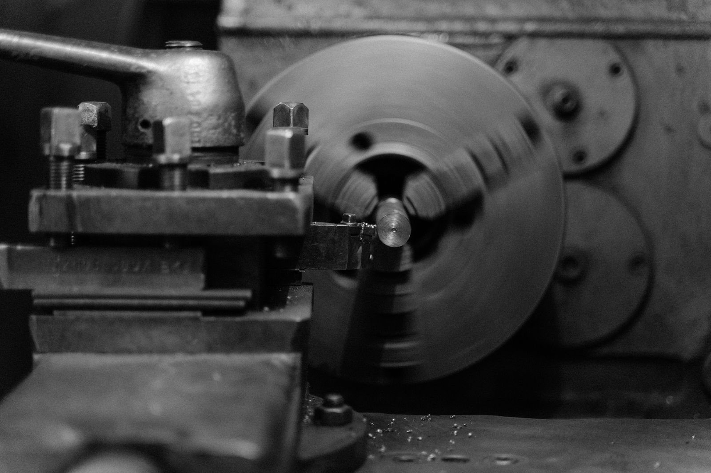
Технология обработки фланца
Точение, отверстия, пазы и контроль: как построить маршрут детали.
Читать →
Как обработать длинный вал и избежать вибраций
Опоры, люнеты, вылет, режимы, последовательность проходов.
Читать →
Обработка корпуса редуктора
Выбор баз и последовательность операций для многосторонней детали.
Читать →
Как обрабатывать крупногабаритную плиту
Плоскостность, базирование, длинные ходы и стратегия съёма припуска.
Читать →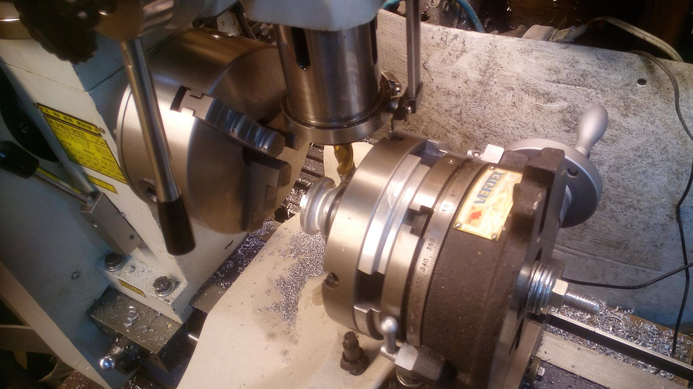
Как сократить количество установов
Когда 4-я/5-я ось, HMC или специальная оснастка дают реальное сокращение переустановок.
Читать →Когда несколько станков заменяет один центр
Разбор концентрации операций и её ограничений: цикл, инструмент, узкое место.
Читать →
Как выбрать оборудование по чертежу детали
Что анализирует технолог: от геометрии и материала к конфигурации станка.
Читать →
Как рассчитать производительность станка
Цикл, загрузка, переналадка, стойкость инструмента и запас мощности проекта.
Читать →Реальные внедрения и ввод оборудования в эксплуатацию
Проекты и чек-листы пусконаладки: как оборудование Механита запускается на производствах наших клиентов — от локомотиворемонта до энергетического машиностроения.
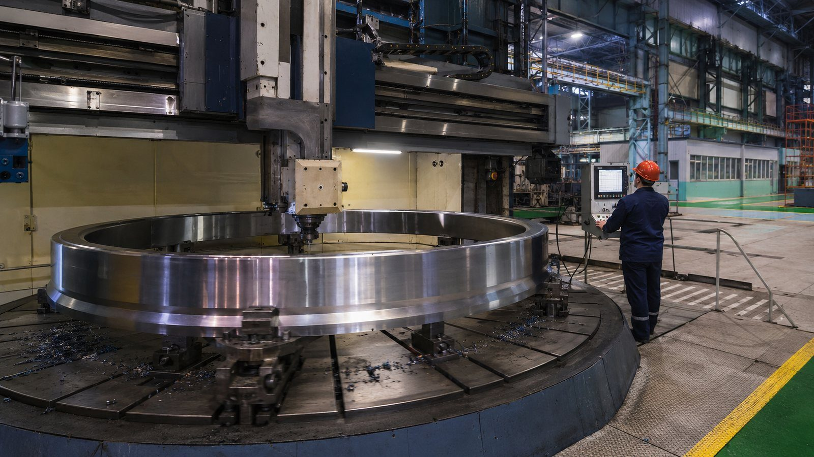
Запуск токарно-карусельного станка CK5116
Введён в эксплуатацию на локомотиворемонтном предприятии для деталей диаметром до 1600 мм и массой до 5 тонн.
Читать →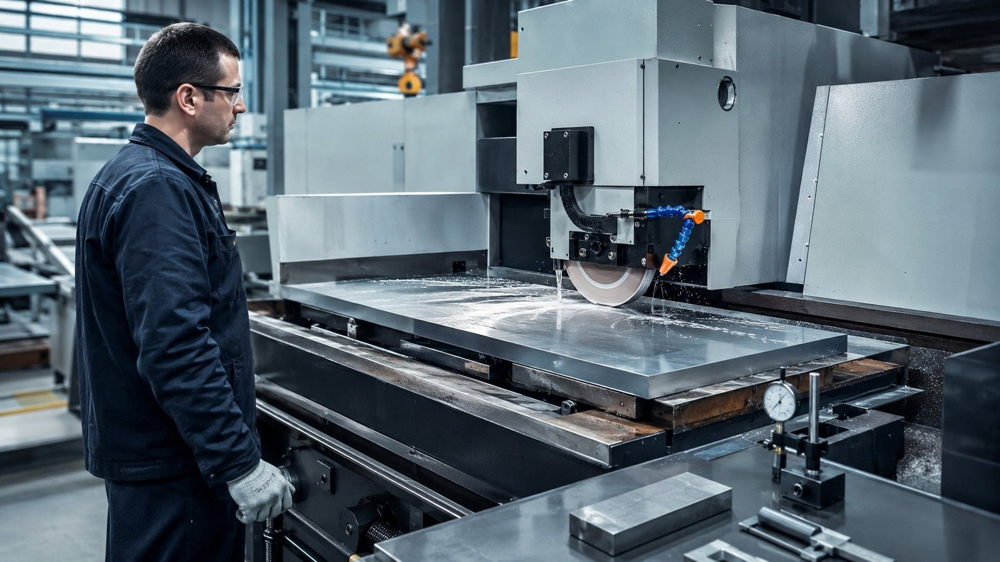
Плоское шлифование для предприятия цветной металлургии
Высокоточная обработка деталей массой до 270 кг с шероховатостью до 0,16 мкм.
Читать →Вертикально-фрезерное оборудование для автокомпонентов
Запущено на предприятии по производству узлов ходовой части и тормозных систем.
Читать →
LB-B500×1500 для горнодобывающего предприятия
Введён в эксплуатацию для изготовления и восстановления запасных частей горнодобывающего оборудования.
Читать →
Токарная обработка деталей ж/д транспорта в Ярославле
Обработка валов, осей и других крупногабаритных деталей длиной до 3000 мм.
Читать →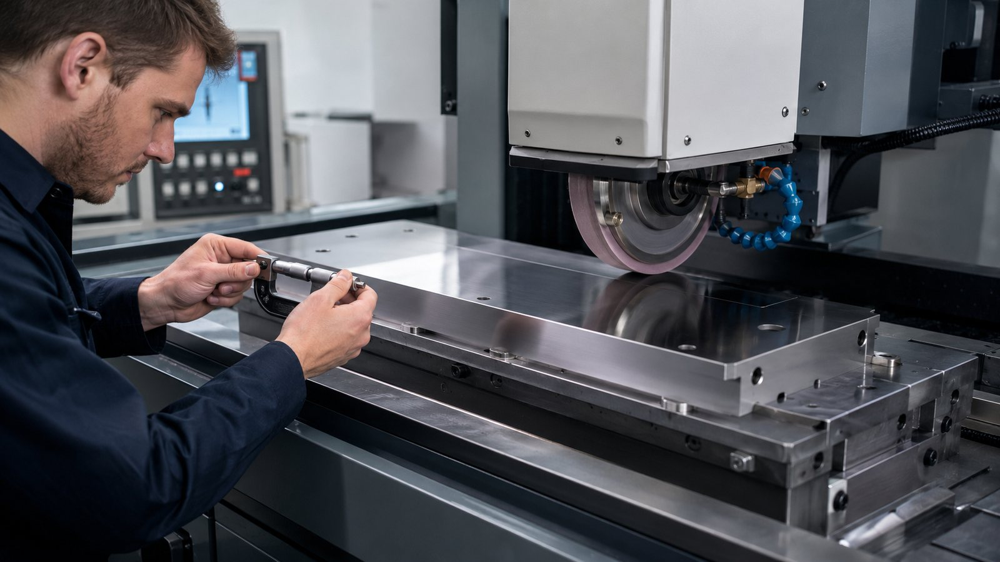
Плоскошлифовальный станок для прецизионной обработки
Плоскостность до 0,01 мм, радиальное биение шпинделя — 0,004 мм на деталях массой до 500 кг.
Читать →
Фрезерный станок для турбогенераторов и гидрогенераторов
Для деталей турбогенераторов, гидрогенераторов и электродвигателей массой до 5 тонн.
Читать →
Токарно-винторезный станок для модернизации ж/д техники
Для деталей диаметром до 1250 мм и массой до 6 тонн: оси, втулки, редукторы, тележки.
Читать →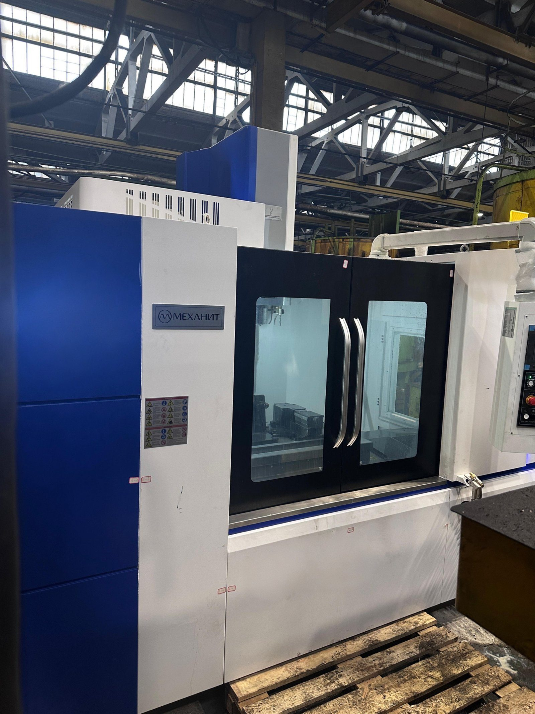
Запуск горизонтально-фрезерного центра
От поставки до первой детали: приёмка, монтаж, геометрия, обучение.
Читать →
Бесцентровое шлифование: ввод станка в эксплуатацию
Настройка кругов, ножа-опоры и первая контрольная партия.
Читать →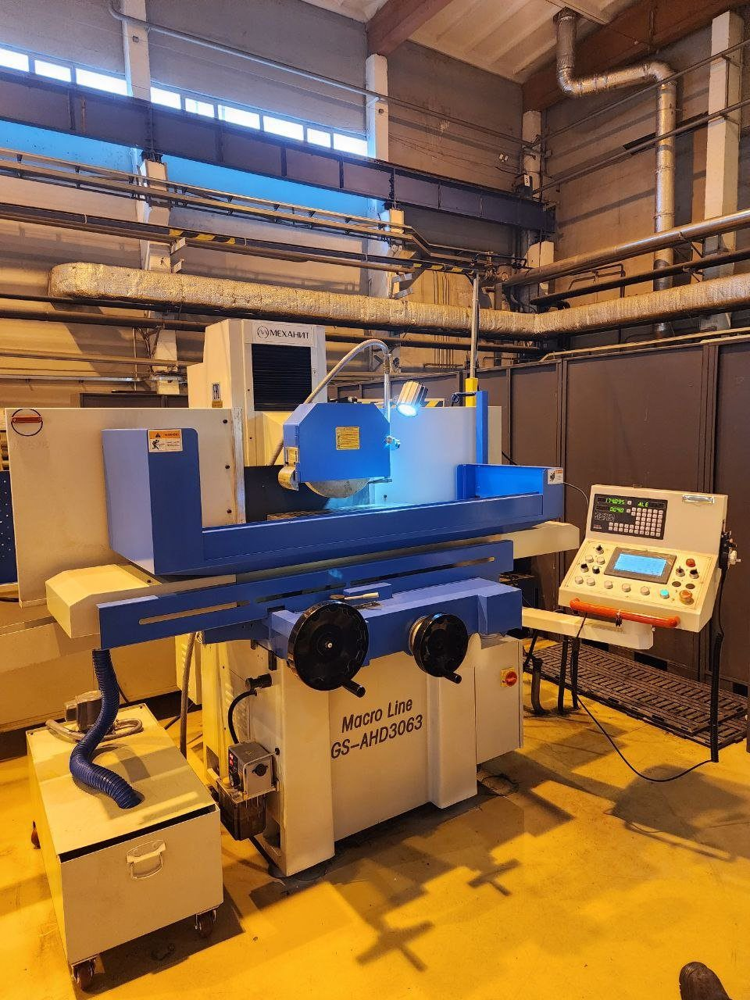
Запуск плоскошлифовального оборудования
Что проверяют на ПНР: выверка стола, плоскостность, контроль.
Читать →Запуск вертикального обрабатывающего центра
Чек-лист ввода в эксплуатацию: монтаж, геометрия, магазин, обучение.
Читать →Запуск круглошлифовального станка
От базовой настройки центров до контроля пробной детали.
Читать →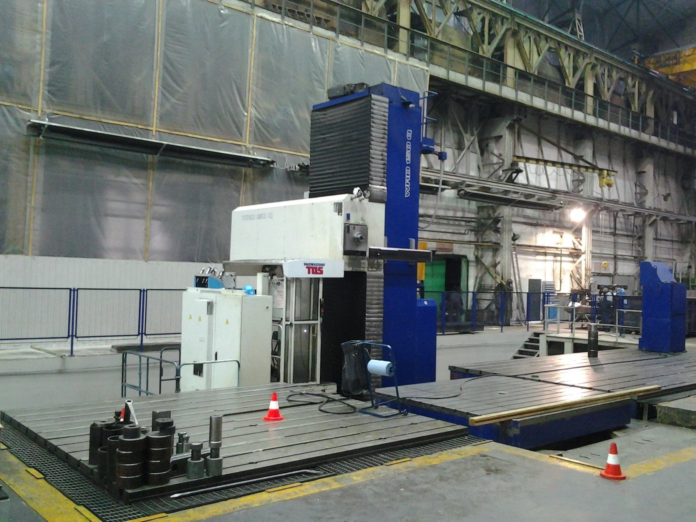
Ввод горизонтально-расточного станка в эксплуатацию
Борштанга, соосность, точность растачивания на контрольной детали.
Читать →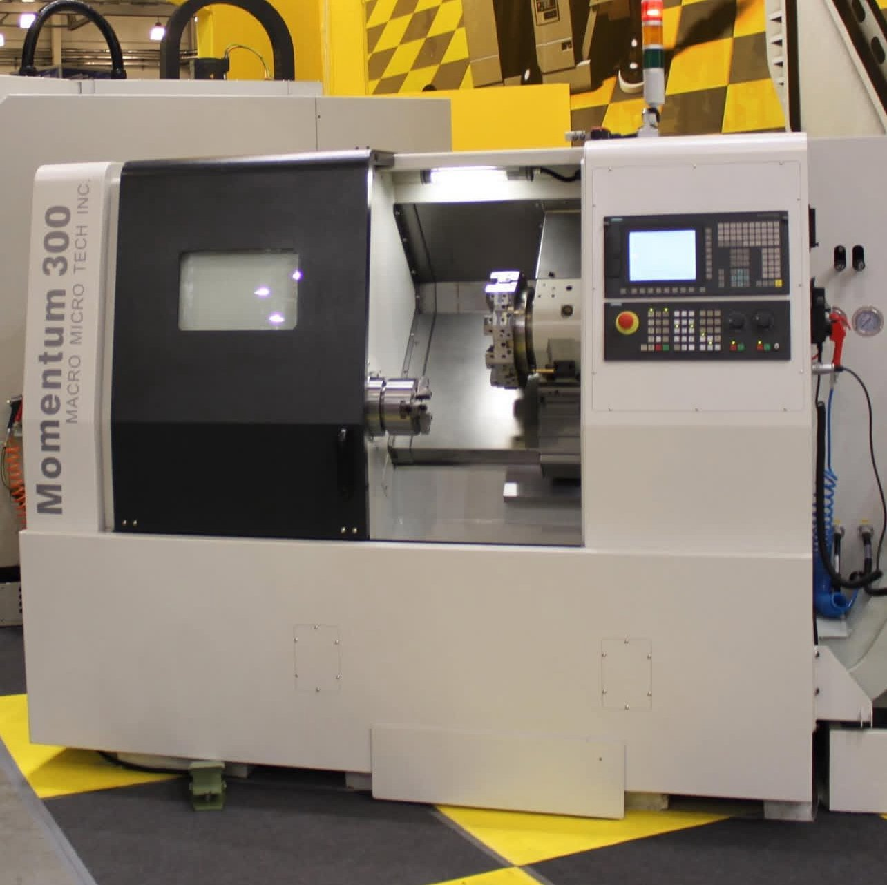
Запуск токарного центра с ЧПУ
От монтажа к стабильному производству: патрон, револьвер, контрольная деталь.
Читать →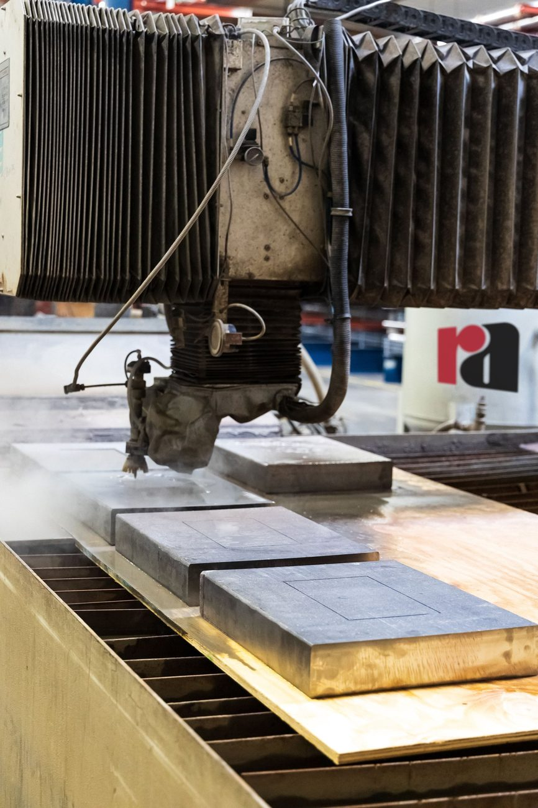
Ввод установки гидроабразивной резки в производство
Насос высокого давления, режущая головка, стол и первая контрольная резка.
Читать →Как устроена работа с Механитом
Процессы компании: подбор оборудования, поставка, пусконаладка, сервис — от первого чертежа до эксплуатации.
Как инженер Механита подбирает станок по чертежу
Входные данные, технологическая оценка, шортлист, проверка конфигурации.
Читать →Что происходит после покупки станка
Пошаговая карта проекта: доставка, ПНР, обучение и запуск.
Читать →Как проходит пусконаладка оборудования
Инженерный чек-лист: установка, геометрия, функции, тестовая обработка.
Читать →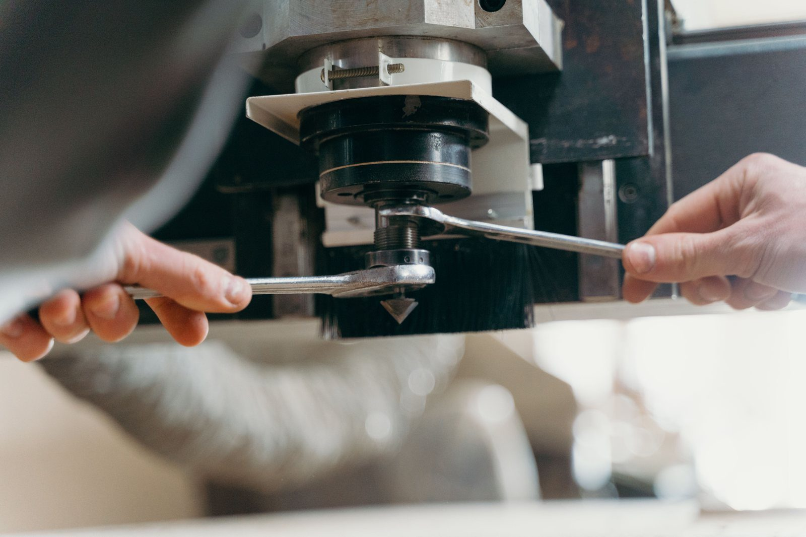
Чем занимается сервисный инженер
Диагностика, обслуживание, обучение операторов и связь с технологами.
Читать →Как проверяется станок перед передачей
Комплектность, геометрия, безопасность и фиксация результатов.
Читать →Механит на отраслевых площадках
Анонсы участия в выставках и практические материалы для подготовки к посещению.
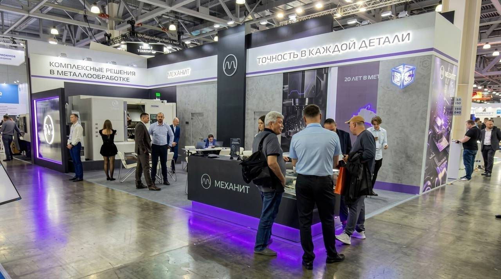
Металлообработка-2026: Механит на стенде 15C040
Оборудование, инженерные решения, станки в наличии и инструмент Macro Tools на стенде 15C040.
Читать →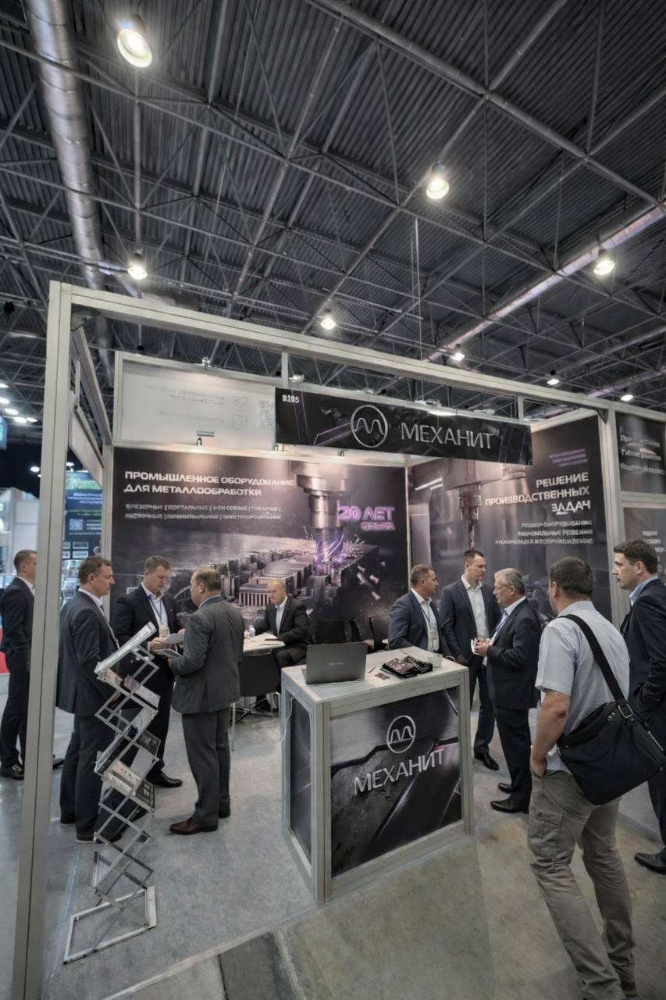
Какие вопросы задают производства на стенде
Три вопроса, которые повторяются от выставки к выставке.
Читать →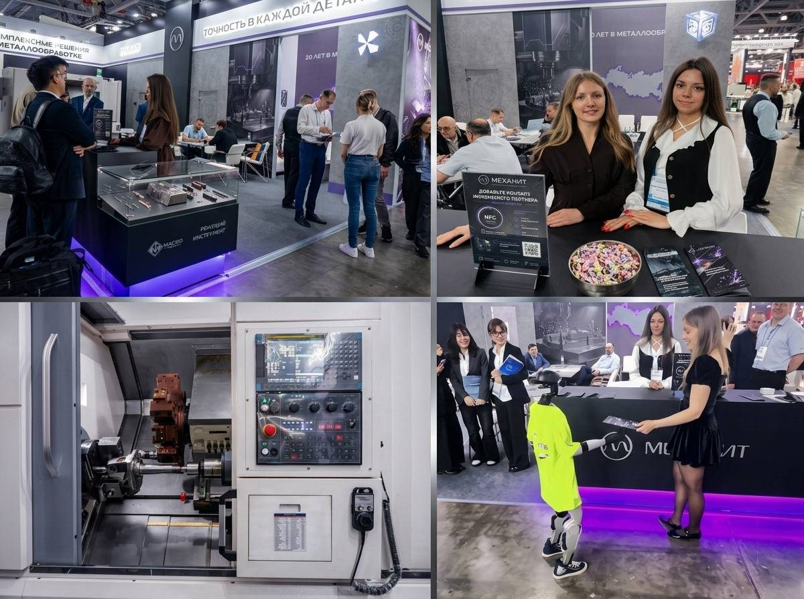
Как подготовить техническую задачу перед выставкой
Чек-лист данных: чертёж, материал, допуски, программа выпуска.
Читать →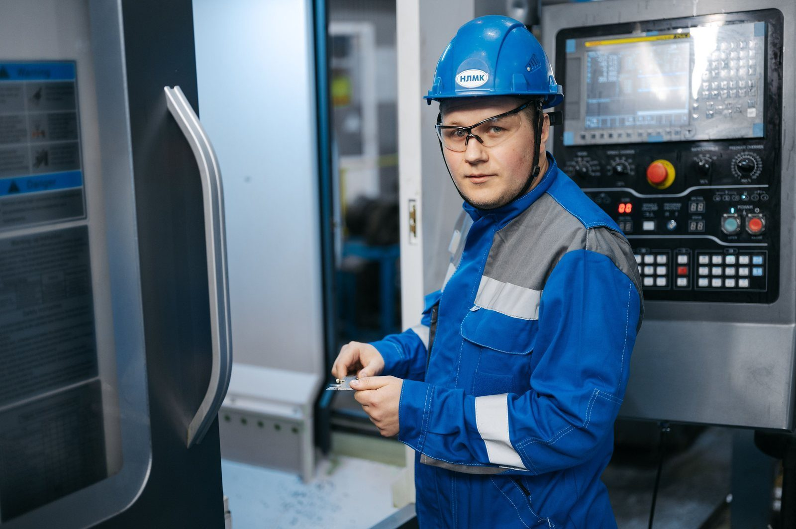
Что спрашивать у поставщика станка на выставке
Чек-лист инженера: рабочая зона, шпиндель, точность, сервис, ПНР.
Читать →Технологические кластеры
Есть производственная задача?
Передайте чертёж, материал и программу выпуска. Технолог Механита поможет определить маршрут обработки и подобрать оборудование.